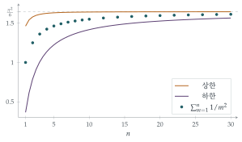

STEP III 2018, 문제 7
계속 읽기 전에 문제를 먼저 읽어 보자. 문제는 STEP Support Programme의 문제 데이터베이스에 있다: step.maths.org/questions/18-s3-q7
도입
1650년에 피에트로 멩골리(Pietro Mengoli)는 간단한 질문 하나를 던졌다. 다음 값은 무엇인가? \[1 + \frac14 + \frac19 + \frac1{16} + \frac1{25} + \cdots\, ?\] 항이 충분히 빠르게 작아지므로 이 합은 수렴(converge)한다(2.3 절에서 그 값이 많아야 \(2\)임을 보였다). 하지만 아무도 그 값을 구하지 못했다. 베르누이(Bernoulli) 형제가 도전했다가 실패했고, 야코프 베르누이(Jacob Bernoulli)는 공개적으로 도움을 간청하기까지 했다. 이 문제는 베르누이 가문의 고향 도시 이름을 따서 바젤 문제(Basel problem)라고 불리게 되었다.
1734년, 젊은 오일러(Leonhard Euler)가 이 문제를 풀었고, 그 답으로 그는 유명해졌다. 합은 \(\pi^2/6\)이다. 도대체 원에 관한 수인 \(\pi\)가 왜 제곱의 역수의 합에 나타나는 것일까? 이 문제는 A레벨(A level, 영국의 대학 입시 과정)을 넘어서지 않는 도구만으로 완전하고 엄밀한 증명(proof)을 제시한다. 드무아브르 정리(De Moivre’s theorem), 다항식(polynomial)의 근의 합, 그리고 조임(squeeze)이 그 도구이다.
시작하기 전에
세부 사항에 들어가기 전에 전체 계획을 살펴볼 만하다.
소문항 (i)에서는 근이 \(\cot^2\bigl(\frac{m\pi}{2n+1}\bigr)\)인 다항식을 만든다.
소문항 (ii)에서는 그 근들을 하나하나 알지 못한 채, 계수(coefficient)를 이용해 모두 더한다.
소문항 (iii)에서는 작은 \(\theta\)에 대해 \(\cot\theta \approx 1/\theta\)라는 사실을 이용하여 \(\cot^2\) 값들의 합을 \(1/m^2\) 값들의 합으로 바꾸고, 조인다.
다항식 \(a_n x^n + a_{n-1} x^{n-1} + \cdots + a_0\)의 근이 \(r_1, \ldots, r_n\)이라면, \(r_1 + \cdots + r_n\)을 계수로 나타내면 무엇인가?
답은 \(-a_{n-1}/a_n\)이다. 이 사실이 소문항 (ii)의 원동력이다.
차근차근 풀기
단계 1 드무아브르
\(\cot\theta + \mathrm{i}\)를 하나의 분수로 나타내어 보자. 분자에 대해 무엇을 알 수 있는가?
\(\cot\theta + \mathrm{i} = \dfrac{\cos\theta + \mathrm{i}\sin\theta}{\sin\theta}\)이고, 마찬가지로 \(\cot\theta - \mathrm{i} = \dfrac{\cos\theta - \mathrm{i}\sin\theta}{\sin\theta}\)이다. 드무아브르 정리에 의해 \[(\cot\theta \pm \mathrm{i})^{2n+1} = \frac{\cos(2n+1)\theta \pm \mathrm{i}\sin(2n+1)\theta}{\sin^{2n+1}\theta}.\] 두 식을 빼면 코사인은 소거되고 사인은 두 배가 되며, \(2\mathrm{i}\)로 나누면 다음을 얻는다. \[\frac{\sin(2n+1)\theta}{\sin^{2n+1}\theta}. \qed\]
단계 2 다항식
이번에는 좌변을 이항정리(binomial theorem)로 전개한다. \(c = \cot\theta\), \(N = 2n + 1\)이라 하자.
\((c + \mathrm{i})^N - (c - \mathrm{i})^N\)에서 두 이항 전개의 어떤 항이 소거되고, 어떤 항이 두 배가 되는가?
\(\mathrm{i}^j\)를 포함하는 항은 첫 번째 전개에서는 \(+\) 부호로, 두 번째 전개에서는 \((-1)^j\)와 함께 나타난다. 따라서 \(j\)가 짝수인 항은 소거되고 \(j\)가 홀수인 항은 두 배가 된다. \[(c + \mathrm{i})^N - (c - \mathrm{i})^N = 2 \sum_{j \text{ 홀수}} \binom{N}{j} c^{N-j}\, \mathrm{i}^j.\] \(j = 2k + 1\)이라 하면 \(\mathrm{i}^j = \mathrm{i}\,(-1)^k\)이고 \(c^{N-j} = c^{2n-2k} = (c^2)^{n-k}\)이다. \(2\mathrm{i}\)로 나누면 \[\frac{\sin(2n+1)\theta}{\sin^{2n+1}\theta} = \binom{2n+1}{1} x^n - \binom{2n+1}{3} x^{n-1} + \cdots + (-1)^n\] 이다. 여기서 \(x = \cot^2\theta\)이다.
어떤 \(\theta\)에서 좌변이 영이 되는가? 이를 이용하여 다항식의 서로 다른 근 \(n\)개를 구하여라.
좌변은 \(\sin(2n+1)\theta = 0\)이지만 \(\sin\theta \neq 0\)일 때 영이 된다. 예를 들어 \(m = 1, 2, \ldots, n\)에 대해 \(\theta = \frac{m\pi}{2n+1}\)일 때가 그렇다. 이 각들은 모두 \(0\)과 \(\frac\pi2\) 사이에 엄격히 놓여 있고, 이 구간에서 \(\cot\)은 양수이며 순감소하므로, \(n\)개의 값 \(\cot^2\bigl(\frac{m\pi}{2n+1}\bigr)\)은 모두 서로 다르다. \(n\)차 다항식은 근을 많아야 \(n\)개 가지므로, 이것들이 근의 전부이다.■
단계 3 근 더하기
근의 합은 다음과 같다. \(-(\text{계수 } x^{n-1}) / (\text{계수 } x^n)\): \[\sum_{m=1}^{n} \cot^2\left( \frac{m\pi}{2n+1} \right) = \frac{\binom{2n+1}{3}}{\binom{2n+1}{1}} = \frac{(2n+1)(2n)(2n-1)}{6\,(2n+1)} = \frac{n(2n-1)}{3}. \qed\] \(n = 1\)로 확인해 보자. \(\cot^2(\pi/3) = \frac13\)이고, \(\frac{1 \times 1}{3} = \frac13\)이다.
단계 4 조임
\(0 < \sin\theta < \theta < \tan\theta\)에서 역수를 취하고(부등식의 방향이 바뀐다) 제곱하면 \[\cot^2\theta < \frac{1}{\theta^2} < \frac{1}{\sin^2\theta} = 1 + \cot^2\theta.\]
\(\theta = \frac{m\pi}{2n+1}\)을 대입하고 \(m = 1, \ldots, n\)에 대해 모두 더해 보자. 바깥쪽 두 합은 무엇이 되는가? 가운데 합은 \(\sum 1/m^2\)과 어떤 관계가 있는가?
가운데 합은 \(\displaystyle\sum_{m=1}^{n} \frac{(2n+1)^2}{m^2 \pi^2}\)이다. 소문항 (ii)에 의해 왼쪽 합은 \(\frac{n(2n-1)}{3}\)이고, 오른쪽 합은 \(n + \frac{n(2n-1)}{3} = \frac{2n(n+1)}{3}\)이다. 전체에 \(\frac{\pi^2}{(2n+1)^2}\)을 곱하면 \[\frac{\pi^2}{3} \cdot \frac{n(2n-1)}{(2n+1)^2} \;<\; \sum_{m=1}^{n} \frac{1}{m^2} \;<\; \frac{\pi^2}{3} \cdot \frac{2n(n+1)}{(2n+1)^2}.\] \(n \to \infty\)일 때 \(\frac{n(2n-1)}{(2n+1)^2}\)과 \(\frac{2n(n+1)}{(2n+1)^2}\)은 모두 \(\frac24 = \frac12\)로 수렴한다(분자와 분모를 \(n^2\)으로 나누면 된다). 따라서 두 경계는 모두 \(\frac{\pi^2}{6}\)으로 수렴하고, 그 사이에 갇힌 부분합(partial sum)도 \(\frac{\pi^2}{6}\)으로 수렴해야 한다(그림 2.4.1).■

돌아보기
계수에서 얻는 정보. 근 \(\cot^2(m\pi/(2n+1))\)을 더 간단한 꼴로 구한 적은 한 번도 없지만, 그 합은 정확히 구했다.
근사한 다음 조이기. \(\cot\theta\)는 \(1/\theta\)와 근사적으로만 같지만, 그 오차는 양방향의 정확한 부등식으로 통제되었다.
유한에서 무한으로. 마지막 단계 전까지 모든 단계는 유한한 합을 다루었다. 무한합은 부등식에서 \(n \to \infty\)로 보냈을 때 비로소 등장했는데, 이것이 무한을 안전하게 다루는 방법이다.
숨은 수학
1734년 오일러 자신의 논증은 현대의 기준으로 엄밀하지는 않았지만, 눈부셨다. 근이 \(\pm a, \pm b, \pm c, \ldots\)이고 \(0\)에서의 값이 \(1\)인 다항식은 \((1 - x^2/a^2)(1 - x^2/b^2)\cdots\)로 인수분해된다. 함수 \(\frac{\sin x}{x}\)는 \(0\)에서의 값이 \(1\)이고 근이 \(\pm\pi, \pm 2\pi, \pm 3\pi, \ldots\)이므로, 오일러는 이를 “무한 다항식”으로 취급하여 다음과 같이 썼다. \[\frac{\sin x}{x} = \left(1 - \frac{x^2}{\pi^2}\right)\left(1 - \frac{x^2}{4\pi^2}\right)\left(1 - \frac{x^2}{9\pi^2}\right)\cdots.\] 우변에서 \(x^2\)의 계수는 \(-\frac{1}{\pi^2}\bigl(1 + \frac14 + \frac19 + \cdots\bigr)\)이고, 매클로린 급수(Maclaurin series) \(\frac{\sin x}{x} = 1 - \frac{x^2}{6} + \cdots\)에서는 그 계수가 \(-\frac16\)이다. 둘을 비교하면 \(\pi^2/6\)을 얻는다. 우리의 STEP 증명은 같은 아이디어의 유한하고 엄밀한 판이다. 근이 \(\pi\)의 배수와 연결된 다항식, 그리고 그 두 번째 계수가 핵심이다.
제곱의 역수를 넘어서
오일러는 이어서 \(\sum 1/m^4 = \pi^4/90\), \(\sum 1/m^6 = \pi^6/945\)를 구했고, 일반적으로 \(\sum 1/m^{2k}\)는 \(\pi^{2k}\)의 유리수 배이며 여기에는 베르누이 수(Bernoulli numbers)가 관여한다. 홀수 거듭제곱은 전혀 다른 이야기이다. 2.3 절에서 보았듯이, \(\sum 1/m^3\)에 대한 공식은 아무도 알지 못한다. 이 합들은 리만 제타 함수(Riemann zeta function)의 값 \(\zeta(2), \zeta(4), \ldots\)이며, 이 함수가 복소수 인수에서 보이는 성질은 소수(prime)의 분포를 지배한다(1.2 절).
다시 만나게 될 곳
대학에서는 \(\zeta(2) = \pi^2/6\)의 증명을 적어도 세 가지 더 만나게 된다. 하나는 푸리에 급수(Fourier series, 함수를 사인과 코사인의 합으로 나타내는 것)를 이용한 증명이고, 하나는 이중적분(double integral)을 이용한 증명이며, 또 하나는 복소해석학(complex analysis)을 이용한 증명이다. 그리고 이 수는 확률(probability)에서도 나타난다. 무작위로 고른 두 자연수가 공약수를 갖지 않을 확률은 \(6/\pi^2 \approx 0.61\)이다. (소수 \(p\)가 두 수를 모두 나눌 확률은 \(1/p^2\)이므로, 어떤 소수도 두 수를 모두 나누지 않을 확률은 \(\prod_p (1 - 1/p^2)\)이며, 오일러는 이 곱이 \(1/\zeta(2)\)와 같음을 보였다.) 확률의 극한에 \(\pi\)가 나타나는 또 다른 예는 12.23 절의 주제이다.
사고 기술
극한을 구하려면, 그 양을 극한이 같은 더 간단한 두 식 사이에 가두어라.
그리고 다루기 까다로운 수들의 합(또는 곱)이 필요할 때는, 그 수들을 근으로 갖는 다항식을 찾아보아라. 계수가 그 수들의 대칭적인 조합, 즉 대칭함수(symmetric functions)의 값을 거저 알려 줄 것이다.
더 도전하기
1992년 판. STEP III 1992, 문제 8에 도전해 보아라. 이 절의 다항식과 비슷한 다항식을 이용하여 탄젠트의 제곱과 코시컨트의 제곱의 합을 정확히 구한다. (힌트: 근이 \(r_i\)인 다항식을 알고 있다면, 근이 \(1/r_i\)인 다항식은 무엇인가?)
홀수의 제곱. \(\sum 1/m^2 = \pi^2/6\)으로부터 \(1 + \frac19 + \frac1{25} + \frac1{49} + \cdots = \frac{\pi^2}{8}\)임을 이끌어 내어라.
네제곱. 심화 \(\sum r_i^2 = (\sum r_i)^2 - 2\sum_{i<j} r_i r_j\)와 다항식의 계수를 이용하여 \(\sum_{m=1}^{n} \cot^4\bigl(\frac{m\pi}{2n+1}\bigr)\)을 구하고, 조임을 변형하여 \(\sum 1/m^4 = \pi^4/90\)임을 증명하여라.
얼마나 빠른가? 소문항 (iii)의 하한을 이용하여 \(\frac{\pi^2}{6} - \sum_{m=1}^{n} \frac{1}{m^2} < \frac{\pi^2}{4n}\)임을 보여라. 부분합이 \(\pi^2/6\)과의 차이가 \(0.001\) 이내가 되려면 \(n\)이 얼마나 크면 충분하다고 이 부등식이 보장하는가? 실제 오차가 \(1/n\)에 가깝다는 사실과 비교해 보아라.
더 읽을거리
William Dunham, Euler: The Master of Us All (Mathematical Association of America). 『오일러: 우리 모두의 스승』. 3장에서 바젤 문제의 이야기를 수학과 함께 온전히 들려준다.
Aigner & Ziegler, Proofs from THE BOOK, Chapter 9, “Three times \(\pi^2/6\)”. 『하늘책의 증명』 9장 “\(\pi^2/6\)의 세 가지 증명”. 이 절의 증명이 실려 있다.
Paul Nahin, Dr. Euler’s Fabulous Formula (Princeton University Press). 『오일러 박사의 놀라운 공식』. 복소수, 푸리에 급수, 그리고 이와 같은 합들을 다룬다.